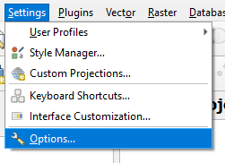
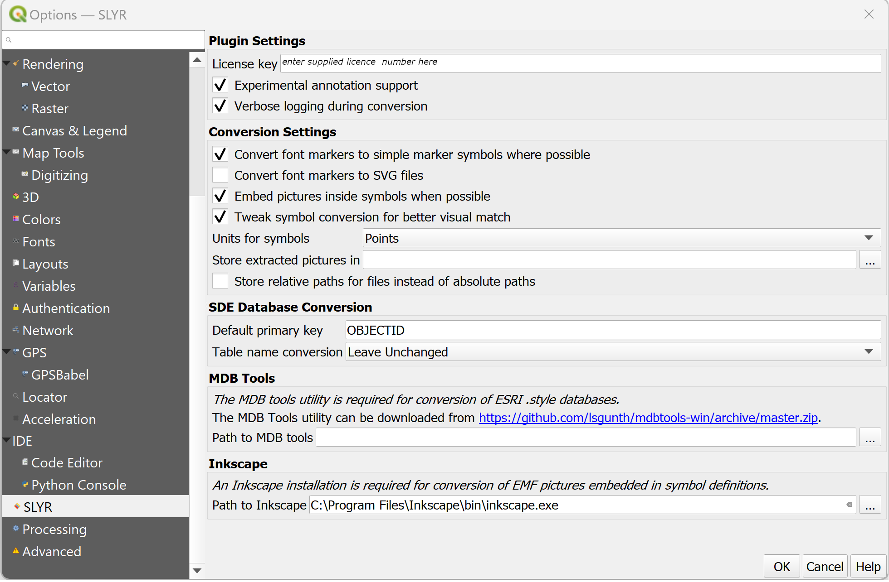

SLYR Options
The SLYR Options dialog provides users the ability to set-up the SLYR
Plugin to meet their requirements.
To access the SLYR Options, in QGIS click on the top menu Settings
▶️ Options.

The Options dialog opens, scroll down on the left and click on SLYR to
access the SLYR options.

Plugin Settings
| Setting | Description | Directions |
|---|---|---|
| License key | A license key is supplied to users once they have purchased SLYR. | Enter your unique license key here, exactly as it appears in your license email. |
| Verbose logging during conversion | Activates verbose debugging output during file conversions. This option can slow down performance, and should be enabled only when requested by North Road support staff. | Tick to activate. |
Conversion Settings
| Setting | Description | Directions |
|---|---|---|
| Convert font markers to simple marker symbols where possible | When activated, SLYR will automatically detect any font markers using standard ESRI fonts which can be converted to an equivalent simple marker symbol in QGIS. In most cases this option is desirable, as it results in QGIS styles which do not require ESRI fonts to work as originally designed. Additionally, the simple marker versions generally result in more exact matches for the original marker sizes and offsets. Deactivate this option only if you have a particular requirement to retain all font markers as QGIS font marker symbols. | Tick to activate. |
| Convert font markers to SVG files | This option will perform a conversion of any font markers to QGIS SVG marker symbols. The original fonts referenced in the ArcMap documents must be available at the time of conversion in order to do this, but the resultant files will be self-contained and no longer require access to the fonts. Activating this option results in higher quality conversions at the cost of larger converted file sizes. | Tick to activate. |
| Tweak symbol conversion for better visual match | When activated, SLYR will alter the original sizes and line thickness of symbols from ArcMap for a better visual match to how these symbols are shown in ESRI software. If deactivated, then all sizes will remain exactly as they were in the original documents. | Tick to activate. |
| Units for symbols: points, millimeters | Controls whether the converted QGIS symbols should use points or millimeters for sizes, widths and offsets. SLYR uses points as a default in order to match the units used by ESRI software, but users may wish to change this to millimeters if they are more comfortable working in these units. | Choose either Points or Millimeters. |
SDE Database Conversion
These settings control how SLYR converts SDE connections to QGIS database connections.
| Setting | Description | Directions |
|---|---|---|
| Default primary key | QGIS requires that the primary key for a database table is specified in advance. Since ArcMap documents do not include this information, SLYR defaults to using "objectid" as the primary key name. If your database setup uses a different primary key you can change this setting to ensure that SDE connections are correctly converted to QGIS database connections. | Leave as OBJECTID or amend as required. |
| Table name conversion | While ArcMap is tolerant to case differences in the name of SDE tables and schemas, QGIS is instead case sensitive. If the case stored in an ArcMap document differs from the actual database table name case then QGIS will not be able to read the resultant layer. This setting permits users to specify a case conversion in order to automatically adjust the stored ArcMap table and schema name case to match the actual casing used on a database. If you are having issues with QGIS being unable to read converted SDE connections then correcting the case conversion using this setting may help. | Choose from the options: Leave unchanged, Convert to Uppercase, OR Convert to Lowercase |
MDB Tools
SLYR requires use of "MDB Tools" in order to read ArcMap .style files. While the licensed version of SLYR is packaged with an inbuilt version of MDB Tools, users of the community version will need to manually download and install MDB Tools and then setup the MDB tools path in this section.
| Setting | Description | Directions |
|---|---|---|
| Path to MDB Tools | This is automatically set for the full license, only the Community License needs to download this tool. | Click the link in the SLYR Options dialog and once installed, enter in the installed MDB Tools path |
Inkscape
SLYR requires the free, open-source Inkscape illustration application in order to convert any EMF graphics found in ArcMap documents. Inkscape must be manually installed from here or EMF graphics will not be converted and will be unusable in QGIS.
| Setting | Description | Directions |
|---|---|---|
| Path to Inkscape | Path to the Inkscape binary (.exe) file. | Install Inkscape from here. and enter the pathway to Inkscape .exe file. |